MULTIMEDIA 12 · SPRINT 4 · STUDENT REVIEW EDITION · 9 OCTOBER 2026
Make the composite believable
1. Make the composite believable
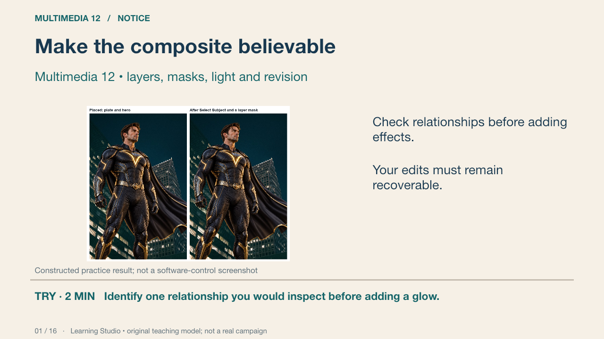
This constructed practice image is a source-state demonstration, not real film key art or an independent assessed exemplar. We will examine which relationships make the subject belong in the scene. Your own project uses a different original concept.
Your turn: Identify one relationship you would inspect before adding a glow.
Success: Name a visible feature, use the term accurately and connect it to audience or purpose.
Learning Studio • original teaching model; not a real campaign
2. Believability checks
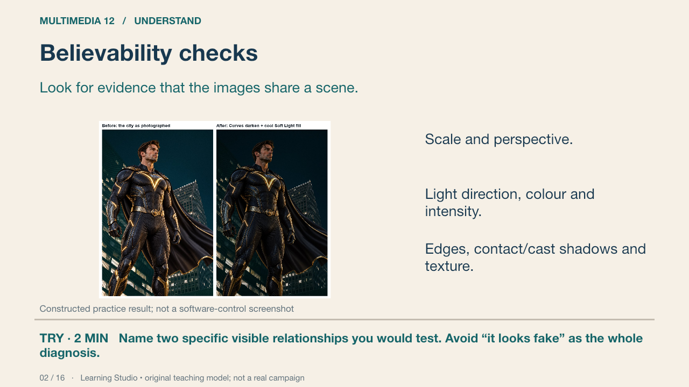
Believability is a relationship between the selected images. A darkened figure does not automatically match a dark background. Inspect where the light should reach, which edges are sharp and whether the subject’s scale fits the scene.
Your turn: Name two specific visible relationships you would test. Avoid “it looks fake” as the whole diagnosis.
Success: Name a visible feature, use the term accurately and connect it to audience or purpose.
Learning Studio • original teaching model; not a real campaign
3. A recoverable layer stack
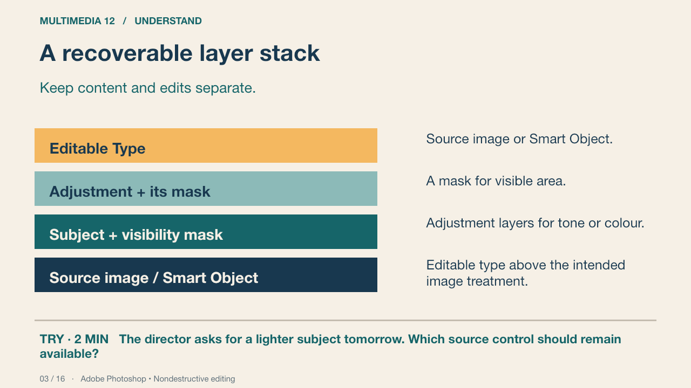
This conceptual diagram is not a Photoshop screenshot. Separate layers let you revisit one decision. A Smart Object retains an embedded or linked source for supported operations; it does not make every possible edit nondestructive. Saving the layered PSD preserves editability.
Your turn: The director asks for a lighter subject tomorrow. Which source control should remain available?
Success: Name a visible feature, use the term accurately and connect it to audience or purpose.
Practice feedback — open after your attempt
Keep the source and a separately editable tonal adjustment rather than relying on a flattened export.
Adobe Photoshop • Nondestructive editing Primary source
4. Selections and layer masks
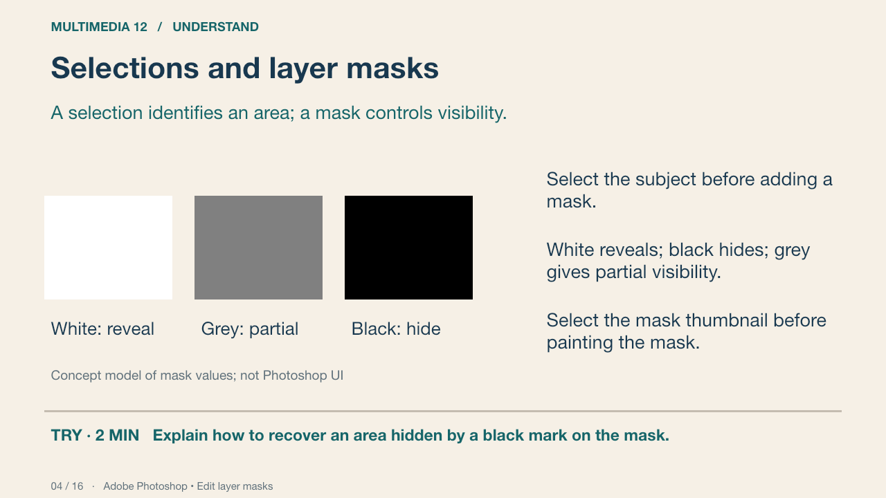
The diagram models image content seen through a grayscale visibility mask. A black mark on the image edits pixels; a black mark on the mask hides their contribution. A layer mask can be adjusted later. You can inspect its thumbnail and recover a hidden edge.
Your turn: Explain how to recover an area hidden by a black mark on the mask.
Success: Name a visible feature, use the term accurately and connect it to audience or purpose.
Practice feedback — open after your attempt
Select the mask and paint white where visibility should return. Confirm that you edited the mask rather than the image.
Adobe Photoshop • Edit layer masks Primary source
5. Masking practice in Photoshop
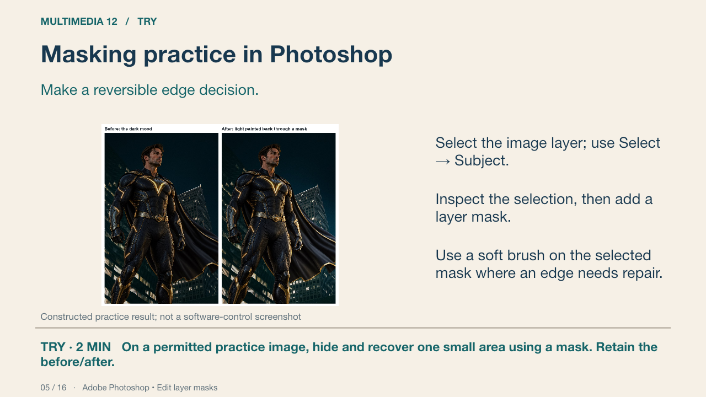
The picture is a constructed result-state, not a control screenshot. The documented procedure is a starting route; automatic selection needs inspection, especially around fine edges. The existing Last Light practice guide supplies its source workflow. If a brush does nothing, check the selected thumbnail, foreground colour, brush opacity and an active selection.
Your turn: On a permitted practice image, hide and recover one small area using a mask. Retain the before/after.
Success: The source remains recoverable; the learner identifies the mask and explains the result.
Adobe Photoshop • Edit layer masks Primary source
6. Adjustment layers
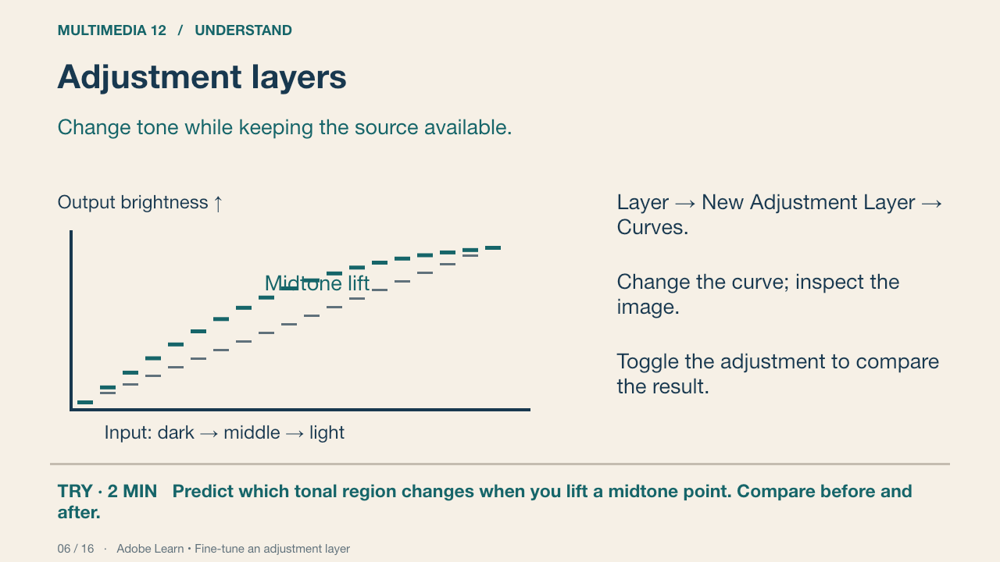
A Curves adjustment changes the relationship between input and output tones. Raising a point generally lifts tones in that region; a strongly shaped curve may lose useful detail. The diagram is a conceptual relation, not a screenshot of an exact Photoshop setting.
Your turn: Predict which tonal region changes when you lift a midtone point. Compare before and after.
Success: Name a visible feature, use the term accurately and connect it to audience or purpose.
Practice feedback — open after your attempt
Midtones are lifted, with the surrounding curve affecting related tones. Inspect detail and the whole image instead of applying a universal numeric recipe.
Adobe Learn • Fine-tune an adjustment layer Primary source
7. Clipping and masks have different jobs
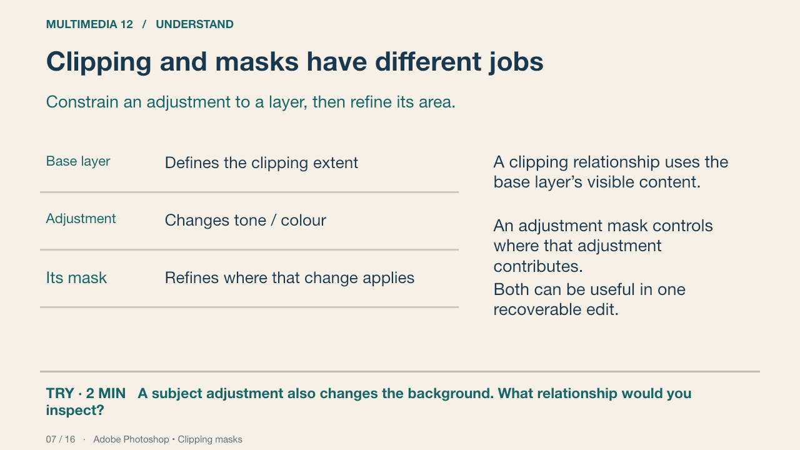
For a subject-only tonal change, place the adjustment above the subject and use Layer → Create Clipping Mask. Then its own mask can localise the effect within that subject. Watch whether the background changes unexpectedly. A clip is not a substitute for every visibility mask.
Your turn: A subject adjustment also changes the background. What relationship would you inspect?
Success: Name a visible feature, use the term accurately and connect it to audience or purpose.
Practice feedback — open after your attempt
Check whether the adjustment is correctly clipped to the intended base layer; then inspect its own mask.
Adobe Photoshop • Clipping masks Primary source
8. Motivated light
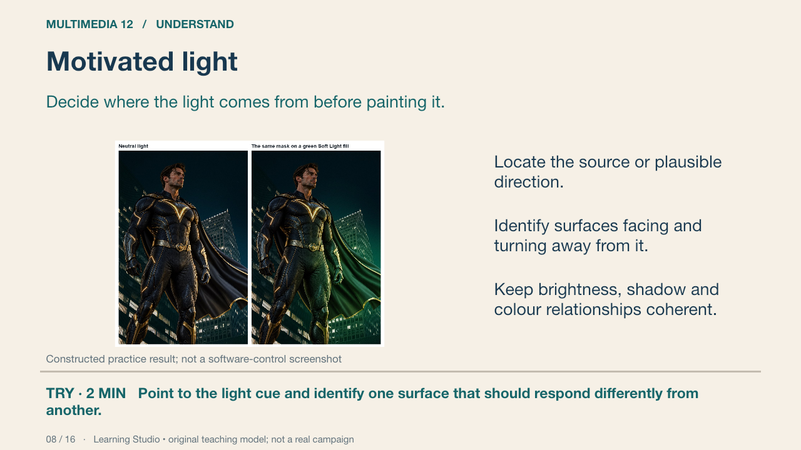
In this constructed practice treatment, the green illumination suggests an off-frame source on the viewer’s right. That is a lighting assumption to test, not proof of a photographed emitter. Compare surfaces facing that direction with surfaces turning away. Added colour alone does not establish plausible illumination; inspect brightness and shadow relationships as well.
Your turn: Point to the light cue and identify one surface that should respond differently from another.
Success: Name a visible feature, use the term accurately and connect it to audience or purpose.
Learning Studio • original teaching model; not a real campaign
9. Light, shadow and edges
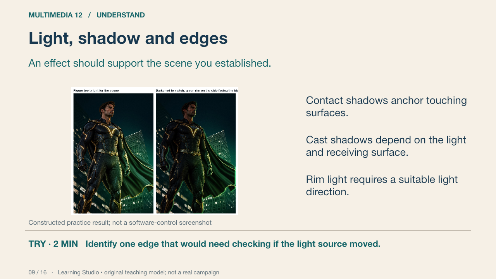
The result-state image is a constructed lighting study. A rim added to every edge can contradict the scene. A generic drop shadow is not a complete substitute for cast-shadow reasoning. Additional embers and glow are optional decoration unless they serve a taught communication purpose.
Your turn: Identify one edge that would need checking if the light source moved.
Success: The named edge is linked to the new source direction; the explanation distinguishes light from decoration.
Learning Studio • original teaching model; not a real campaign
10. Diagnose one fault at a time
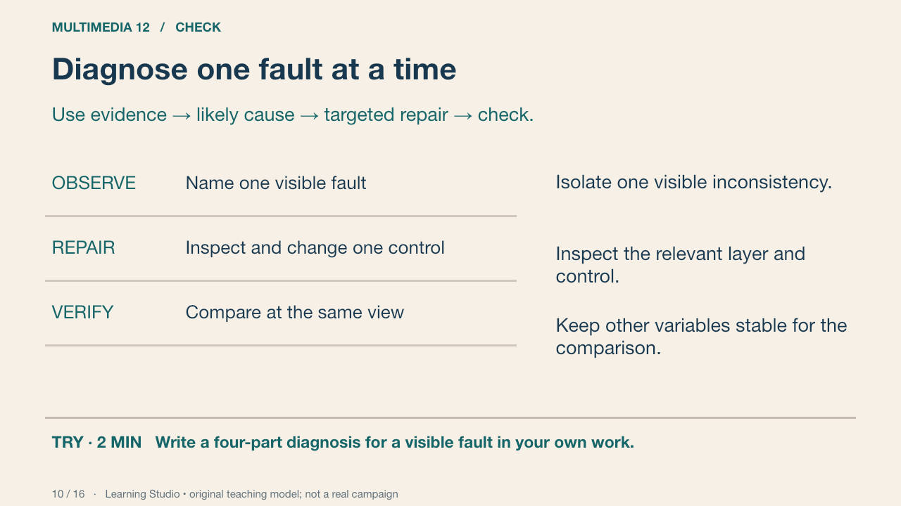
An overly bright subject may involve an adjustment, blend mode, opacity or the source itself. Begin with the visible fault, then inspect the relevant controls. Randomly changing several layers makes it difficult to explain the repair.
Your turn: Write a four-part diagnosis for a visible fault in your own work.
Success: A precise fault, a plausible control, a recoverable change and a comparison at the same scale.
Learning Studio • original teaching model; not a real campaign
11. Grade with a purpose
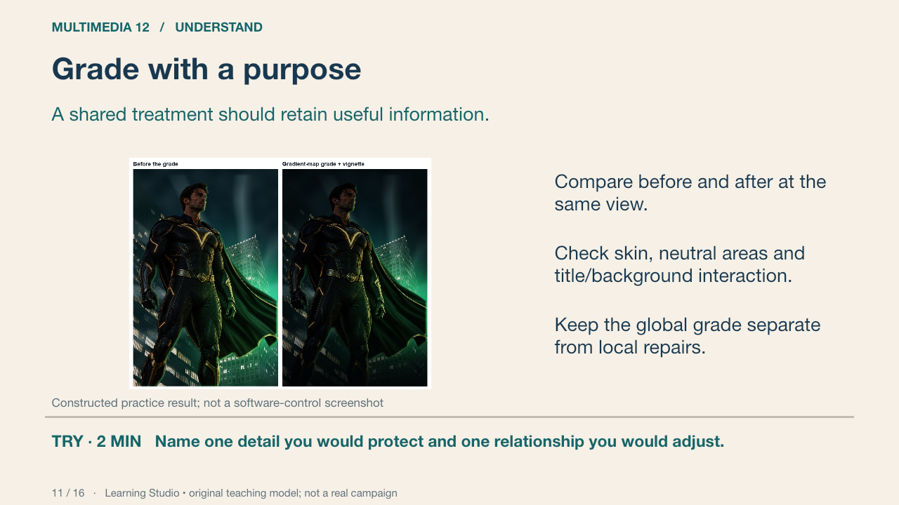
A shared grade can connect sources, but it can also conceal weak light decisions or make text unreadable. Judge whether the treatment communicates the intended story while preserving important detail. The shown image is a scripted practice result.
Your turn: Name one detail you would protect and one relationship you would adjust.
Success: Name a visible feature, use the term accurately and connect it to audience or purpose.
Learning Studio • original teaching model; not a real campaign
12. Documented demonstration
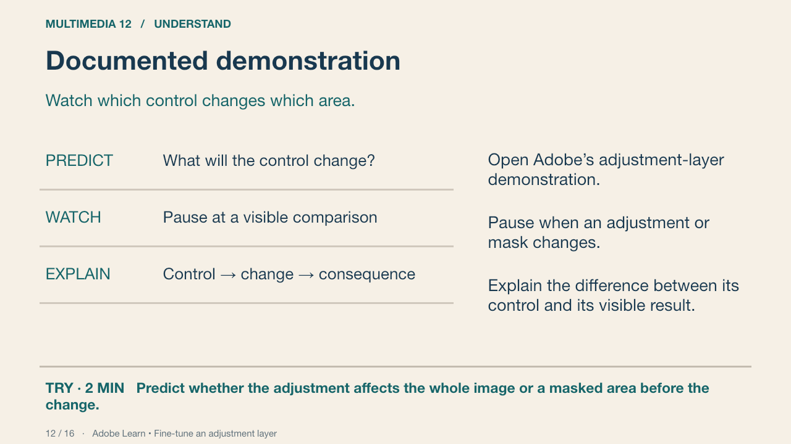
The linked Adobe Learn page is an optional demonstration and written reference. View the adjustment-layer segment available there; identify the adjustment and its mask. If media is blocked, use this deck’s layer-stack and mask diagrams plus the documented procedure. No unverified clip timestamps are prescribed.
Your turn: Predict whether the adjustment affects the whole image or a masked area before the change.
Success: Names the control, affected area and reason.
Adobe Learn • Fine-tune an adjustment layer Primary source
13. Production practice
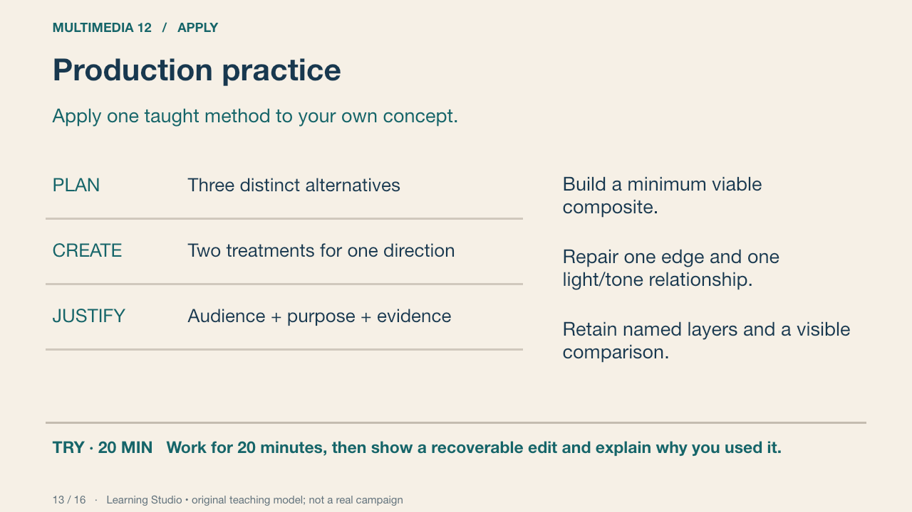
Keep the production target small: one principal subject or symbolic object, one coherent environment and readable key information. Use foundation support where needed. More effects do not substitute for a clear message and recoverable controls.
Your turn: Work for 20 minutes, then show a recoverable edit and explain why you used it.
Success: A named control produces a purposeful change, with before/after evidence.
Learning Studio • original teaching model; not a real campaign
14. Changed conditions
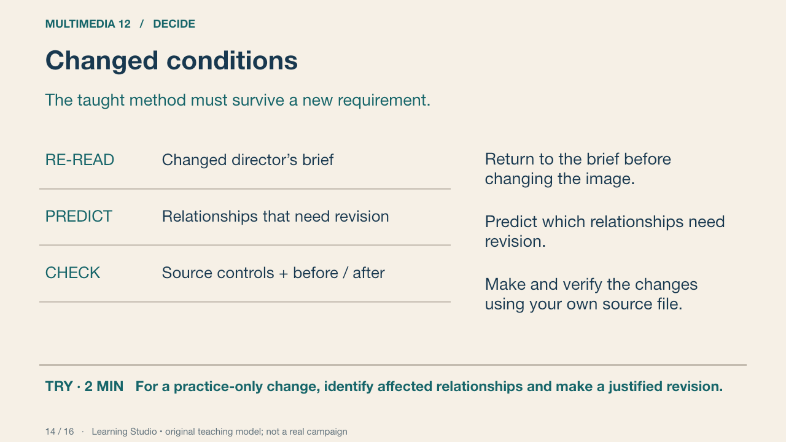
During practice, the teacher can change a light position or viewing format. The final independent task uses the student’s own design and a taught method. This slide deliberately does not prescribe the assessed layer sequence or supply its solution.
Your turn: For a practice-only change, identify affected relationships and make a justified revision.
Success: The change responds to the stated requirement and the learner can locate the relevant controls.
Learning Studio • original teaching model; not a real campaign
15. Save, reopen and inspect
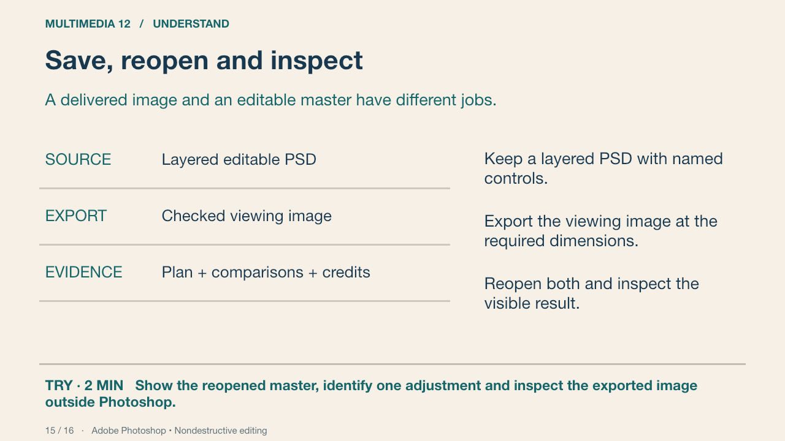
A PNG or JPEG is suitable for viewing but does not replace an editable source. Reopening is an important check: inspect missing assets/fonts, dimensions, layer visibility and whether the intended adjustment remains available. Naming a file “final” does not verify it.
Your turn: Show the reopened master, identify one adjustment and inspect the exported image outside Photoshop.
Success: Both files open; dimensions are correct; the student locates a recoverable control.
Adobe Photoshop • Nondestructive editing Primary source
16. Retrieve, explain and revisit
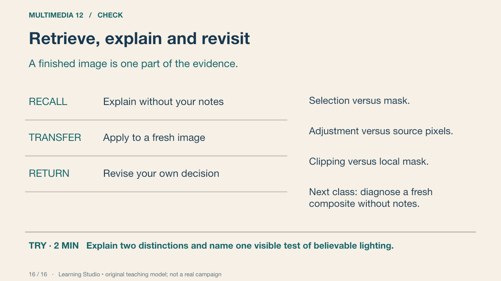
Close the notes for an individual response, then compare with the accurate definitions. Correct any mistaken distinction in your own words. A delayed check uses a different image so that remembering this demonstration is not the only evidence.
Your turn: Explain two distinctions and name one visible test of believable lighting.
Success: Name a visible feature, use the term accurately and connect it to audience or purpose.
Practice feedback — open after your attempt
A selection identifies an area; a mask controls contribution. An adjustment is separately editable. Light reasoning needs a stated source and coherent surface response.
Learning Studio • original teaching model; not a real campaign